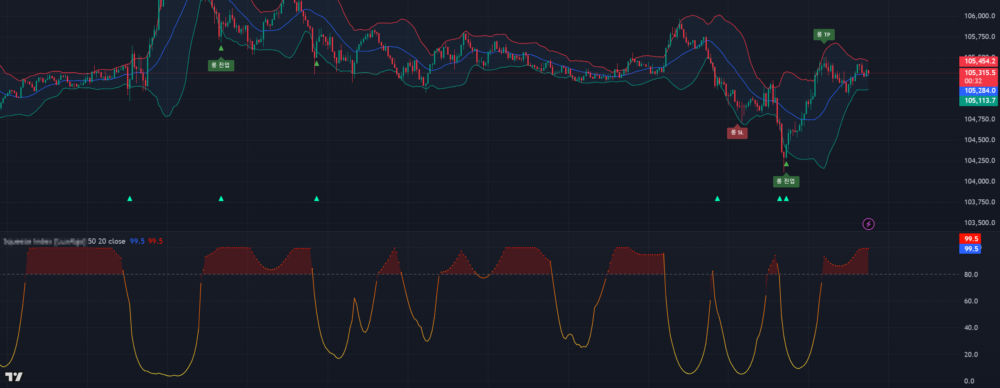
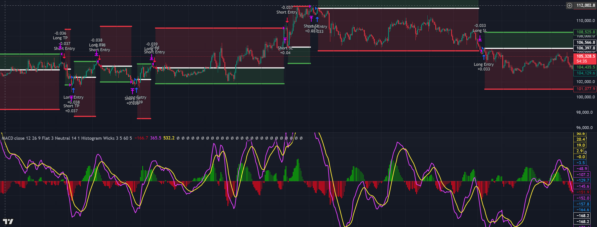
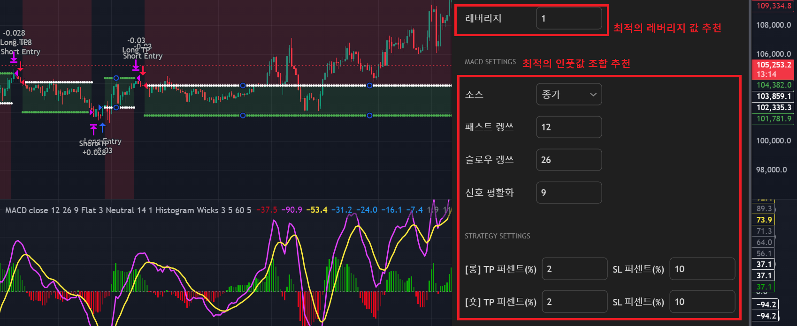
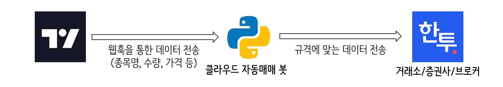
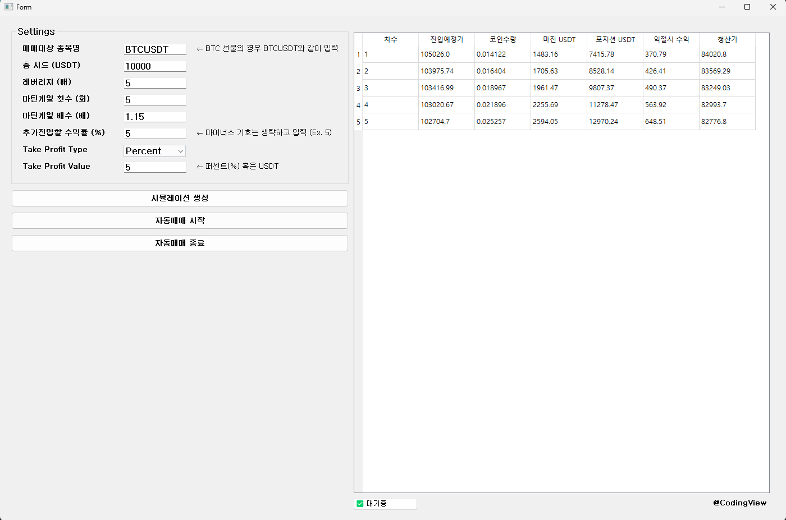
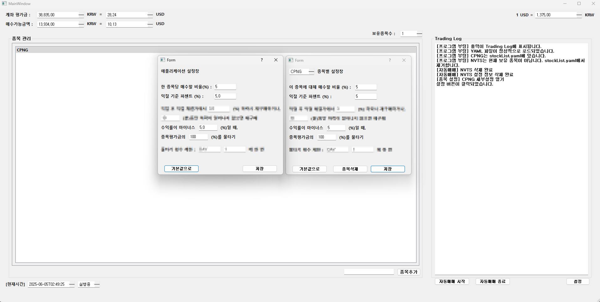
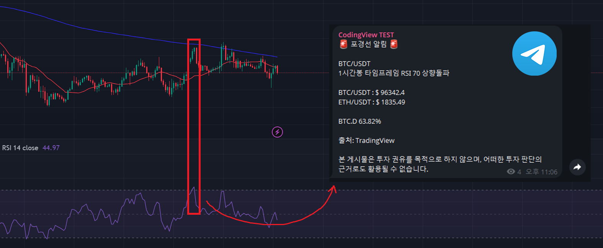
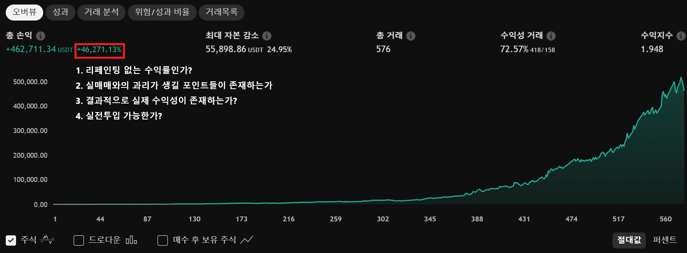

솔루션별 작업 예시
모든 형태의 개발은 일단 가능할 가능성이 높습니다. 세세한 부분이 가능한지 불가능한지에 대해서는 저와 상담을 통해 구체화하시면 됩니다. 어떤 기능을 원하시면 그것을 그대로 가감없이 제시해주십시오. 그 기능을 어떻게 구현할지는 전문가인 제가 고민합니다. 따라서, 일단 자신이 생각한 개발 형태가 가능하다고 가정하고 문의 주시면 됩니다.
그럼에도 개발 형태에 대해 감을 잡으시는데 도움 드리기 위해 제가 제공드리는 솔루션별로 작업 예시를 제시해드리니, 의뢰하실 때 참고자료로서 활용해주시면 감사드리겠습니다.
🚀 Solution 01: 지표(Indicator) 개발
▪️ 트레이딩뷰 커뮤니티에 공개된 A 지표와 볼린저밴드를 함께 사용하여, A 지표의 선 모양이 점선이 아닐 때 볼린저밴드 하단을 돌파하는 경우 롱 타점을, 반대의 경우 숏 타점을 차트에 표시하는 지표를 제작해주세요.
▪️ 타점과는 별개로, 볼린저밴드 하단을 돌파하는 경우 해당 캔들 저가 아래에 초록색 삼각형을, 상단을 돌파하는 경우 고가 위에 빨간색 역삼각형이 표시되도록 해주세요. A 지표가 점선일 때 볼린저밴드 상단선이나 하단선을 터치하면 차트 최하단에 형광초록색 삼각형이 표시되도록 해주세요.
▪️ 볼린저밴드의 Length, Min Width, A 지표에서 원래 설정가능하던 인풋값들은 모두 사용자가 조절할 수 있도록 제작해주세요.

🚀 Solution 02: 전략(Strategy) 개발
▪️ 볼린저밴드 상단을 터치하면 숏 포지션을, 하단을 터치하면 롱 포지션을 진입하는 전략을 개발해 주세요.
TP는 퍼센트로, SL은 진입한 캔들의 시가 혹은 저/고가에 설정해주세요.
인풋값에서 볼린저밴드의 Length와 Diff, TP를 몇 퍼센트로 할지, SL 기준을 시가로 할지, 저/고가로 할지를 직접 조절할 수 있도록 해주세요.
현재 평단, TP라인, SL라인이 차트 위에 시각적으로 표시되도록 해주세요.
▪️ RSI와 지표 A를 함께 사용하여, RSI가 70이상일 때 지표 A의 타점이 발생하면 롱 포지션만을 진입하는 전략을 개발해 주세요.
단, 롱 포지션이 진행중일 때 지표 A의 타점이 또 발생하면, 현재 평단보다 낮은 가격에 타점이 발생한 경우만 물타기를 진행해주세요.
만약 현재 평단보다 타점 발생 지점의 가격이 높다면 포지션이 진입되지 않아야 합니다.
포지션의 중첩은 최대 N회까지로 하고, 인풋창에서 이 N값을 변경할 수 있도록 해주세요.
▪️ MACD k선의 골든크로스가 발생할 때 롱 포지션을 진입하고, 데드크로스가 발생할 때 숏 포지션을 진입하는 전략을 개발해 주세요.
진입 이후에는 평단에 대비하여 N% 상승하면 익절, M% 하락하면 손절할 수 있도록 해주세요.
단, N과 M의 값은 롱/숏 여부에 따라서 각각 지정할 수 있도록 인풋값을 구성해 주세요.

🚀 Solution 03: 트레이딩뷰 전략 세팅값 최적화
▪️ 트레이딩뷰 전략 스크립트 A를 제공해드릴테니, 수익성과 안정성의 밸런스가 가장 좋은 인풋값(세팅값)의 조합을 찾아주세요.
▪️ 특정 세팅값의 조합에서 레버리지 몇 배를 사용하는 것이 적절한지와 본 전략의 리스크와 안정성에 대한 의견을 전달해주세요.

🚀 Solution 04: 클라우드 기반 자동매매봇 구축
▪️ 트레이딩뷰의 알러트 신호를 받아 바이낸스 거래소에서 코인선물 종목을 매수매도하는 클라우드 기반 자동매매봇을 구축해주세요.
▪️ 트레이딩뷰가 아닌, 외부 신호를 받아 OKX 거래소에서 코인현물 종목을 매수매도하는 클라우드 기반 자동매매봇을 구축해주세요.
▪️ 트레이딩뷰의 알러트 신호를 받아 한국투자증권에서 미국주식을 매수매도하는 클라우드 기반 자동매매봇을 구축해주세요.

🚀 Solution 05: 자동매매 프로그램 개발
▪️ MT4에서 사용할 수 있는 자동매매 EA(Expert Advisor)를 개발해주세요. 매매로직의 경우 아래 PDF에 준하여 동작하도록 해주세요.
▪️ 한국투자증권에서 미국 주식을 자동매매하는 프로그램을 개발해주세요.
종목을 입력하면 일단 매수하고 특정 수익률에 도달하면 익절하거나, 물타기를 수행하는 로직에 따라 동작하도록 해주세요.
단, 사용자가 종목을 입력해도 현재 나스닥의 하락률이 N% 이상이면 매수되지 않도록 해주세요.
또, GUI에서 사용자가 종목과 관련된 설정을 할 수 있도록 해주세요.


‼️ 프로그램이 품고있는 매매 로직의 경우 셀수 없을 만큼 다양한 형태가 가능합니다. 이 곳에 모두 적을 수 없으므로 일단 모든 형태가 다 가능하다고 생각하시고 문의해주세요.
🚀 Solution 06: 기타 매매보조 프로그램 개발
▪️ 바이낸스 BTCUSDT.P 차트를 모니터링하다가 RSI가 30, 20, 10을 하향돌파할 때마다 텔레그램으로 메세지를 보내는 프로그램을 개발해주세요.
▪️ 미 금리, 소비자 물가지수, 미국 국채 10년물, 버핏지수, 환율, 코인 현재가, 공포탐욕 지수 등을 한 화면에 띄우는 스크리너를 개발해주세요.
▪️ 증권사 API와 통신하여 코스닥 상장 종목의 거래량 증가율을 5분마다 나타내는 스탁 스크리너를 개발해주세요.
▪️ 자동매매 전략의 타점이 나올 때마다 디스코드/텔레그램으로 타점과 관련된 정보(종목명, 진입가, 레버리지, TP가격, SL가격 등)를 전송하는 프로그램을 개발해주세요.

🚀 Solution 07: 전략 Q/A (Quality Assurance)
▪️ Kmong에서 XXX가 판매하는 YYY 전략을 구매하려고 하는데, 해당 전략의 백테스팅 데이터입니다. 이 전략이 사기가 아닌지, 실제 수익성이 있는지 검증해주세요.
▪️ 제가 가지고 있는 전략입니다. 본 전략에 리페인팅, 수익률 뻥튀기, 백테스팅과 실매매와의 괴리 등이 존재하는지 검사해주세요.
▪️ 제가 스스로 세팅값을 최적화한 전략입니다. 이 전략을 실전투입해도 될지 확인해주세요.

후기
수많은 의뢰자분들, 트레이더분들, 그리고 협력업체 분들이 긍정적인 후기와 함께 성원을 남겨주시고 게십니다. 길던 짧던 후기를 남겨주시는 모든 분들께 진심으로 감사드리지만, 웹페이지의 한정된 공간을 고려하여 특히 감명깊었던 몇 개의 후기를 소개하겠습니다.
정말 대단하십니다. 벌써 여러건을 의뢰를 맡겼는데 그만큼 신뢰가 생깁니다. (프로그램이나 전략의) 기획에 관해 고민중인 부분도 늘 올바른 방향을 제시하고 피드백을 주십니다. 번번히 실패한 전략이 있었는데 이를 해결해주신 것은 물론이고 추가적인 부분도 구현해주셔서 잘 사용하고 있습니다. 신뢰있는 작업물 늘 감사합니다.
감사합니다. 전략의 기획 부분은 기본적으로 의뢰자분께서 준비해주셔야 하는 것이지만, 큰 틀에서의 기획을 제시해주시면 디테일한 부분에 대해서는 제가 첨언드릴 수 있습니다. 번번히 실패한 전략이라고 하셨는데, 당장의 결과는 좋지 못한 전략일지라도 작은 변화로서 큰 차이가 발생하는 자동매매 특성상 얼마든지 개선의 여지가 있습니다. 제 자동매매 이론과 신뢰도 있는 기술에 근거하여 의뢰자분의 성공적인 자동매매 구축을 돕겠습니다.
역시 최고입니다. 이번이 두번째 결과물입니다. 제가 원하는 방식을 생각하며 실현가능한지 고민하였으나 개발자님과 소통하고 나면 시원시원하게 가능성을 열어주시니, 진짜 최고의 개발자님이십니다. 혼자서 생각하거나 고민하시는분들 먼저 문의하세요~ 가능성을 열어주실겁니다. 앞으로 더 많은 개발요청으로 오래동안 함께 갈생각입니다.~
감사합니다. 자동매매에 있어서, 더 나아가 프로그래밍에 있어서 거의 대부분의 방식은 실현이 가능합니다. 물론 그 난이도가 높을 수는 있겠지만요. 해당 방식이 물리적으로 가능할지에 대해서 고민하는 것은 전문가인 제가 할 일입니다. "이게 가능할까?"라고 고민하시지 마시고, 파격적이고 신박한 아이디어 많이 제시 부탁드립니다.
코드를 만드는 작업은 처음이었습니다. 그러다보니 6명의 개발자중에서 알아보고 시작했고 처음부터 압도적으로 친절하게 답변해주셨습니다. 상세페이지에서 보시듯이 본인 실력에 대한 프라이드때문에 관심이 가장 많이 가셨던 분인데 친절한 대응에 바로 고민도없이 결정했습니다. 다른분들과 진행해보지 않은 입장이지만 저처럼 처음 코드를 만드시고 코드에 대한 지식이 아예없으신분들 막막하신분들은 꼭 이 전문가를 추천드립니다. 장담컨대 후회는 절대 없으실거라 말씀드립니다. 저는 현재 1차코드를 3번의 수정작업을 끝내고 이제는 2번째 의뢰까지 드리려고 소통중인상황입니다.
감사합니다. 긍정적인 평가 감사드립니다. 확실히, 따로 직원을 쓰지 않고 제가 직접 응대하다보니 타 업체보다 기술적인 면이나 이론적인 면에 대해서 소통하기가 원활한 면은 있는 것 같습니다. 저는 제가 세계 최고의 자동매매 전문가라고는 절대 생각하지 않지만 제가 여태까지 쌓아온 이론과 노력, 그리고 데이터에 대한 믿음을 가지고 있습니다. 의뢰자분들도 저의 이런 면을 보고 의뢰 주시는 것 같네요. 감사드립니다.
너무 고생 많으셨고, 인품 좋고 실력 좋으신 전문가님을 만난게 제 행운인것 같습니다. 거의 2주동안 계속 소통하면서 훌륭한 작업물을 만들어주신 전문가님께 정말 감사드립니다. 때로는 아침 일찍, 때로는 새벽까지 작업물을 전달해주시는 모습을 보면서 정말 책임감이 남다른 분이시구나를 느꼈습니다. 앞으로도 계속 잘 부탁드리오며 만들어주신 프로그램 잘 사용하도록 하겠습니다. 사업 번창하시길 진심으로 기원 드립니다. 감사합니다.
감사합니다. 솔직히, 저도 솔루션을 제공하면서 포기하고 싶은 경우도 있습니다. 하지만 저를 믿고 맡겨주시는 의뢰자분들을 생각하면서 제가 하기로 한 것들을 묵묵히 하려고 노력하는 중입니다. 앞으로도 책임감을 가지고 자동매매 솔루션 제공에 힘쓰도록 하겠습니다.
개발자님은 진짜 숨은 보석입니다. 제가 진짜 여러군데 견적받고 진행했는데, 실력 대비 개발비용이 너무 저렴한 편입니다. 많은 개발자들하고 소통해보면 느끼지만, 저는 개발을 모르는데도 이 분이 내공이 얼마나 높은지 초보자도 알 수 있습니다. 고민하지마세요! 이번 자동화매매도 전부 다 완벽하게 돌아가고 있어서 너무 좋습니다.
감사합니다. 숨은 보석인가요! 그렇게까지 표현해주시니 쑥스럽습니다. 제 개발 비용이 저렴하다는 것을 알아주시는군요 ㅠㅠ 감동입니다. 저는 제 스스로도 '제공해드리는 기술력'에 비해서 개발 비용이 높지 않은 수준을 유지하도록 노력하고 있습니다. 이런 의도가 전해질 수 있었다니 기쁘네요. 저희가 하는 일은 '수익성 있는 전략'을 만드는 일입니다. 전략은 한 번 만들어두면 유지보수하면서 계속 사용할 수 있습니다. 사실 이런 관점에서 보면 개발비용이 100만원, 200만원이 아니라 1000만원, 2000만원이어도 굉장히 저렴한 편인 겁니다. 제가 솔루션을 받으시는 분들이 개인투자자일 경우가 많고, 성공에 대한 보장을 할 수 없다는 점을 고려하여 견적을 많이 타협하고 있다는 점을 알아주시니 제가 올바른 방향으로 가고 있다는 것에 확신이 더해지네요.
저는 개발자님과 지난 10월달부터 현재까지 전략 지표 및 자동매매 진행하고있습니다. 벌써 2건이나 되었습니다. 복잡한 지표를 한달 넘게 제가 문의드리고 추가 수정요청드렸으나 항상 친절히 진심으로 응대해주셔서 감사합니다. 근데 중요한건, 개발자님 실력이... 대단합니다. 다른 개발자분들이 포기한것들을 혹시나 해서 문의해보니 정말 제가 원하는걸 만들어주셔서 정말 인정합니다. 아직도 어디 의뢰를 맡겨야 되나 고민하시는 분들은 제 후기를 믿고 문의해보세요. 밑져야 본전이잖아요. 다른 개발자분들과 많이 다르고 실력과 인성, 책임감이 느껴지실겁니다. 저는 추가 개발 의뢰 준비중입니다~~ ^^
감사합니다. 친절한 응대는 사람으로서의 기본이라고 생각합니다. 이 일을 하다보니 제가 다른 개발자분들이 포기한 프로젝트를 받아서 완성시키는 경우가 꽤나 있는데, 이야기를 들어보면 다른 개발자분들이 포기하시는 것은, 그 분들은 '개발'에 대한 지식만 있지 막상 '자동매매'라는 것에 대해서는 이론과 경험이 없기 때문인 경우가 많은 것 같습니다. 진료는 의사에게, 회계는 회계사에게, 자동매매는 자동매매 전문가에게 맡기시는게 가장 좋습니다.